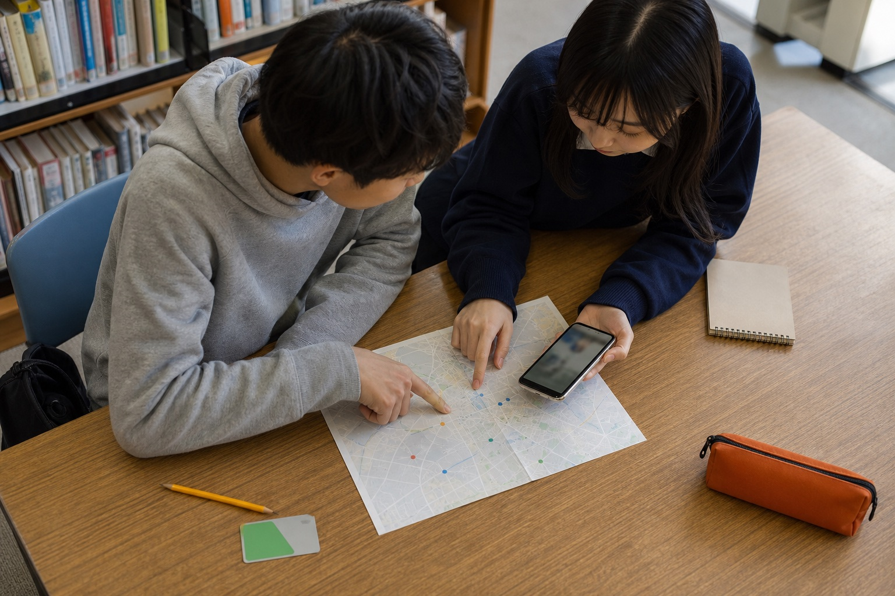

4つのさがし方
やりたいことがはっきりしていなくても大丈夫。好きな入口から見てみてください。
迷ったら「診断」
どこから見ればいいか分からないときは、3つの質問に答えるだけの「かんたん診断」から。あなたに合いそうな拠点を提案します。
Not sure where to start?
3つの質問で、あなたに合う場所をさがす
カードの見方
- 写真・名前・場所・中高生向けの紹介文で、どんな場所かがひと目でわかります
- 「公式サイト掲載」は団体の公式ページで確認した画像候補です。詳細ページから出典を確認できます
- 「イメージ写真」は活動分野の雰囲気を伝えるための生成画像で、その団体を撮影した写真ではありません
- タグは「やってみたいこと」。同じタグの拠点をまとめてさがす目印にもなります
- 写真右下のハートを押すと「気になるリスト」に保存できます。保存内容はこの端末のブラウザ内にのみ残ります
- 気になるリストの「リストを共有」から、同じ候補を見られる専用URLを友だち・保護者・先生に送れます
- カードをタップすると詳細ページ（地図・タグ・基本情報・公式サイト・シェア）が開きます
- 詳細ページの「予定に入れる」で、公式サイトで確認した開催日や申込締切をカレンダーに追加できます
- 詳細ページのURLはそのまま共有できます。友だちや先生に送るのにも使えます
対象表示の見方
カード写真の右上には、その場所やプログラムが主に誰向けかを表示しています。
中学生
高校生
その他
中学生と高校生の両方が対象の場合は、2つのラベルが並びます。「その他」には大学生、若者、家族、学校・団体などが含まれます。詳しい年齢や利用条件は詳細ページと公式サイトでご確認ください。
参加する前に
料金・対象年齢・予約の要否などは変わることがあります。参加する前に、必ず公式サイトや各拠点で最新情報を確認してください。はじめて行く場所は、おうちの人や先生に伝えてから利用しましょう。
気になることがあれば よくある質問・安全に使うために もあわせてご覧ください。